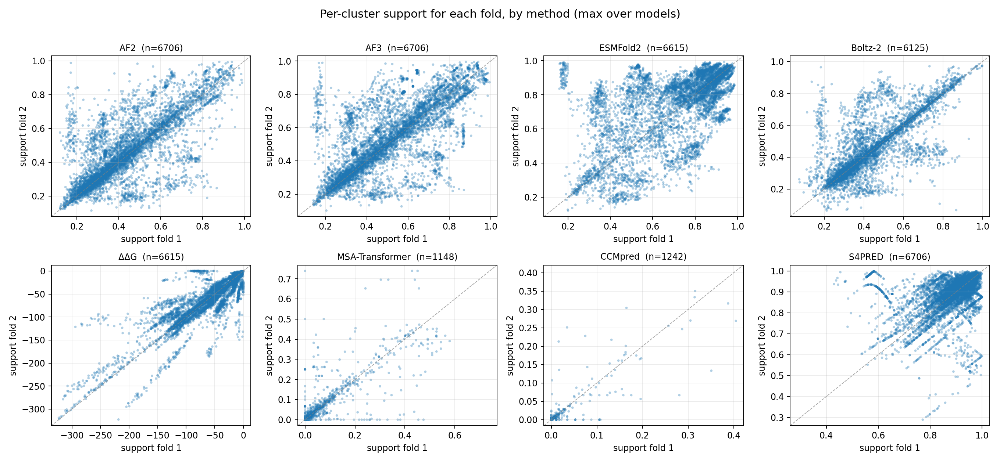
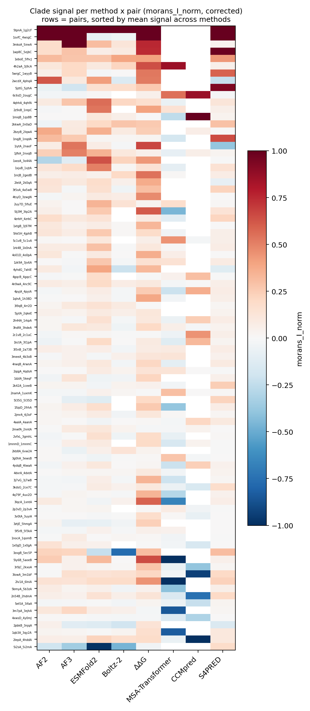
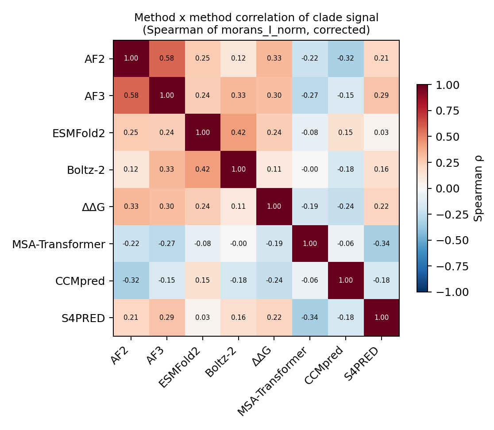
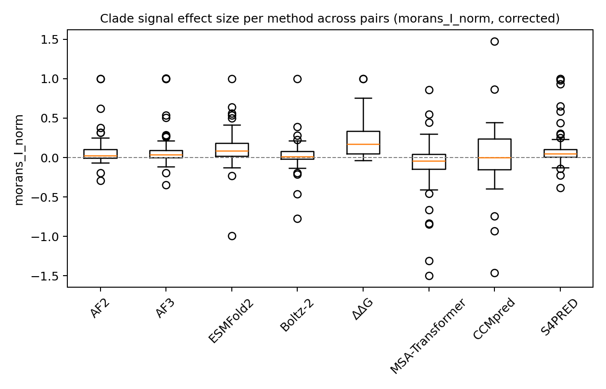
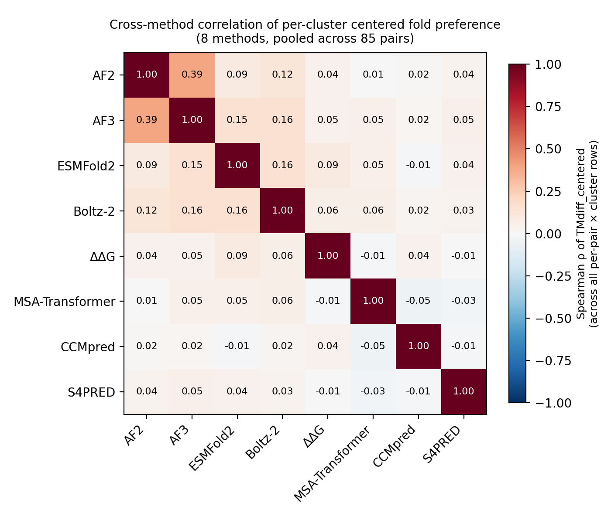

Cross-pair summary of the 8-method fold-switch analysis (AF2, AF3, ESMFold2, Boltz-2, ΔΔG, MSA-Transformer, CCMpred, S4PRED) over the fold-switching pair set. Each figure is described above it.
Each panel is one method. For every sequence cluster we plot its predicted support for fold 1 (x) against fold 2 (y). For AF2, AF3, ESMFold2 and Boltz-2 the axes are TM-scores to each reference structure; for ΔΔG, MSA-Transformer, CCMpred and S4PRED they are the unified per-fold proxy (stability / contact recall / secondary-structure similarity) mapped onto a common scale. A cluster near the diagonal reaches both folds (fold-switcher); off-diagonal clusters prefer one fold. Spread along both axes means the method is resolving fold-specific signal.

Sequence-divergence-corrected clade signal (Moran's I_norm) for every method (columns) and fold-switch pair (rows). Red = clusters that prefer the same fold are phylogenetically grouped (clade-structured); blue = anti-structured; white ≈ none. Rows are sorted by the mean signal across all methods, so the most clade-structured pairs sit at the top. Signal is weak overall — few cells exceed I_norm ≈ 0.2.

Spearman correlation between methods of their per-pair clade signal. High values mean two methods light up on the same pairs. Only the structure predictors (AF2/AF3/Boltz-2/ESMFold2) correlate appreciably; ΔΔG, MSA-Transformer, CCMpred and S4PRED are largely orthogonal, i.e. they contribute independent evidence.

Distribution across pairs of the clade-signal effect size (Moran's I_norm) for each method. Boxes near zero indicate little systematic clade structure; ΔΔG shows the widest positive tail. Because n ≈ 100 clusters makes the permutation test overpowered, we rank methods by effect size here rather than by significance counts.

Spearman correlation of the raw per-cluster fold preference (centered TM difference), pooled across all clusters and pairs — a signal-level companion to the clade-signal correlation above. AF2 and AF3 share training bias (highest correlation); every other method pair is near zero, confirming the methods supply largely independent evidence (most orthogonal: S4PRED).
